Before: 9f8a34b. Production meshes, texture bytes and normals. Fixed 35° sun, exposure 0, Standard transform. No fog, HDRP, native uploads or GPU timing. Ground pasture reference: sRGB (105,126,86). Camera labels are altitude above terrain; oblique slant ranges are longer.
| Altitude | Revision | Forest / pasture linear Y | Forest / pasture greyscale |
|---|---|---|---|
| 300 m | before | 0.506 | 81.5 / 114.4 = 0.713 |
| 300 m | after | 0.422 | 74.8 / 114.4 = 0.654 |
| 1000 m | before | 0.501 | 81.0 / 113.7 = 0.712 |
| 1000 m | after | 0.425 | 74.6 / 113.7 = 0.656 |
| 2500 m | before | 0.515 | 81.9 / 113.5 = 0.722 |
| 2500 m | after | 0.440 | 75.9 / 113.5 = 0.669 |
| 9000 m | before | 0.545 | 85.3 / 114.4 = 0.745 |
| 9000 m | after | 0.406 | 73.6 / 114.4 = 0.644 |
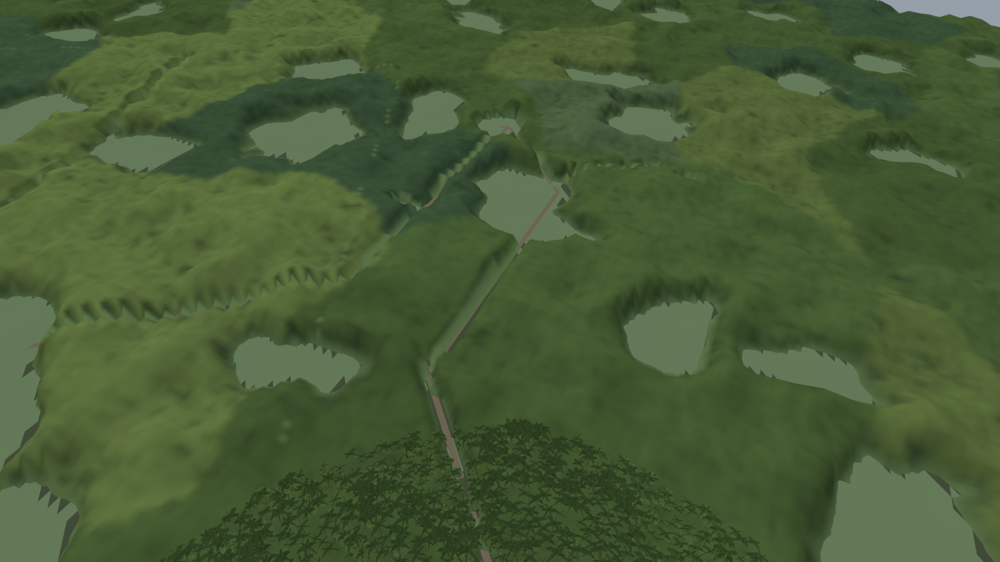
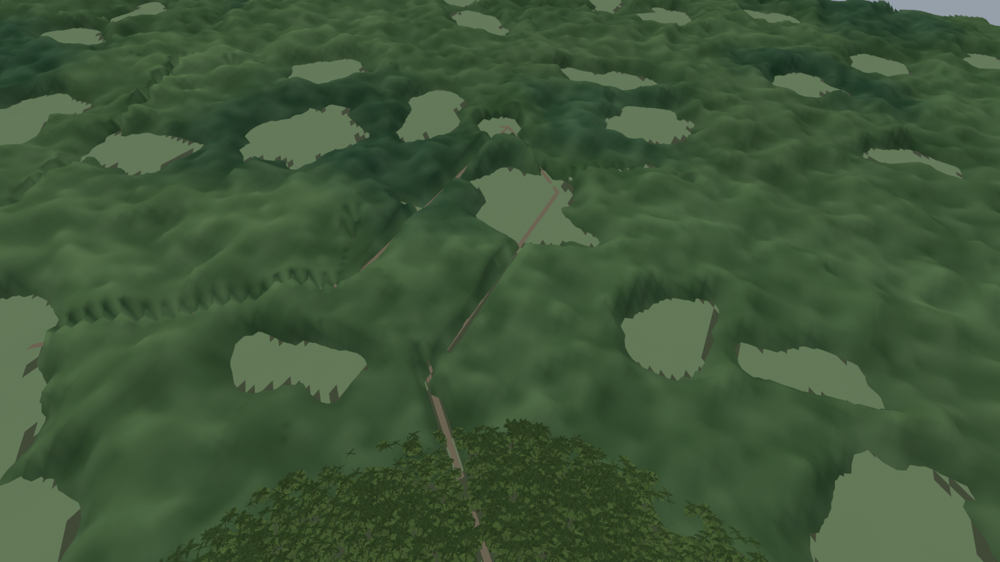
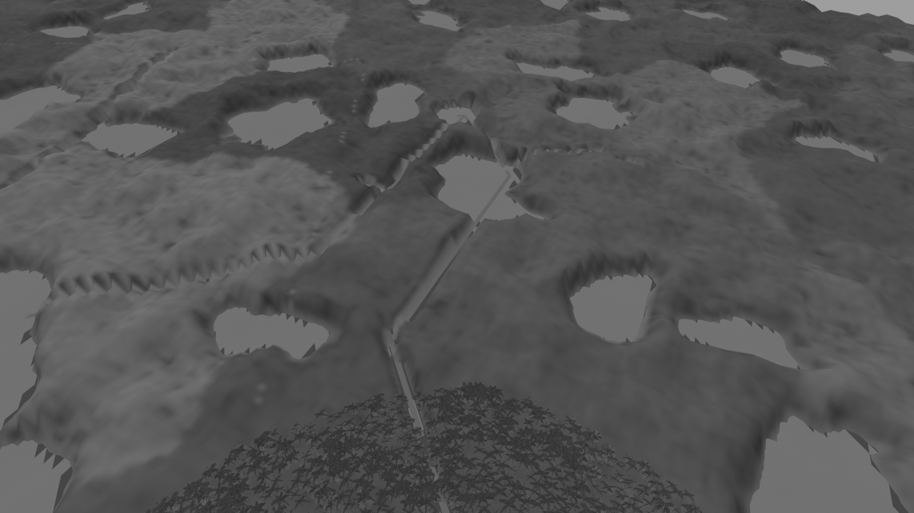
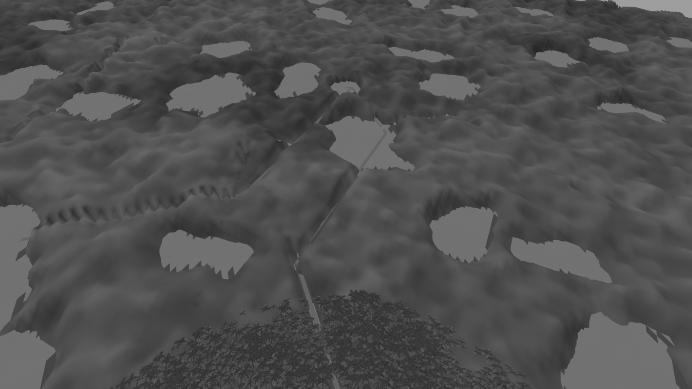
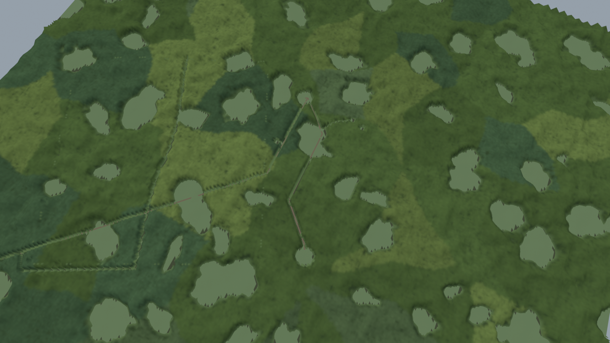
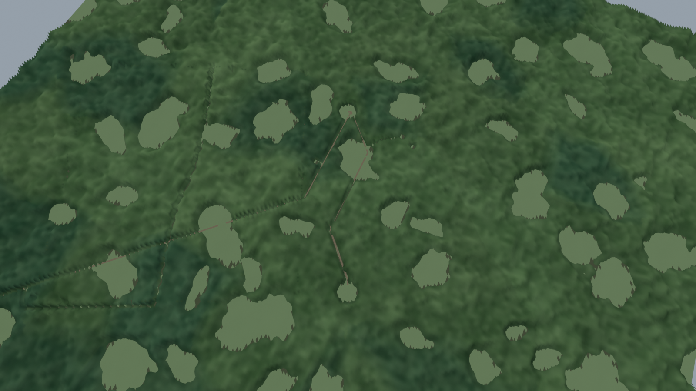
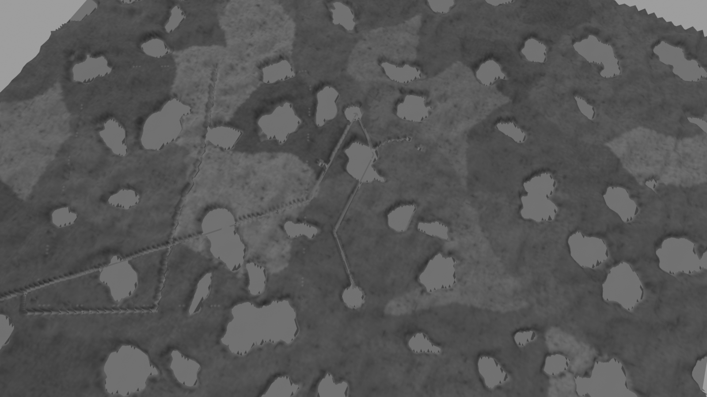
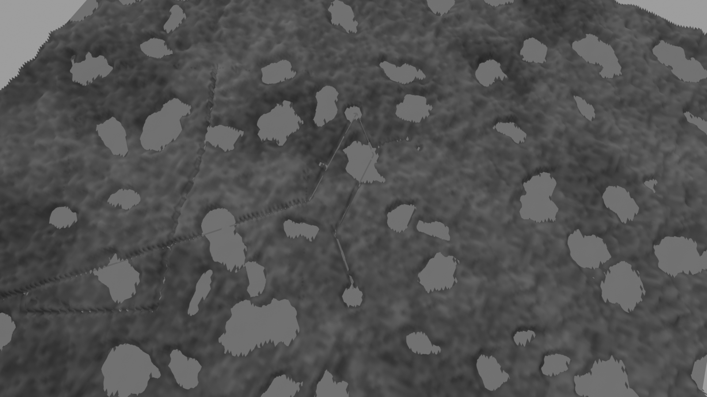
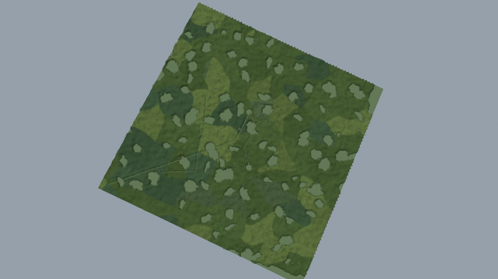
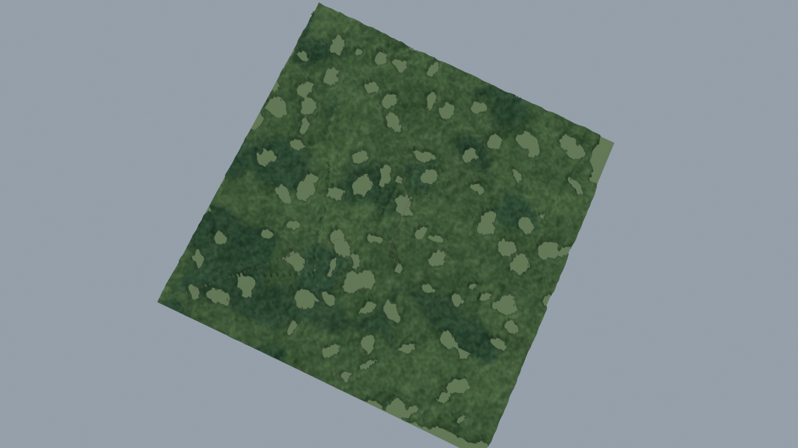
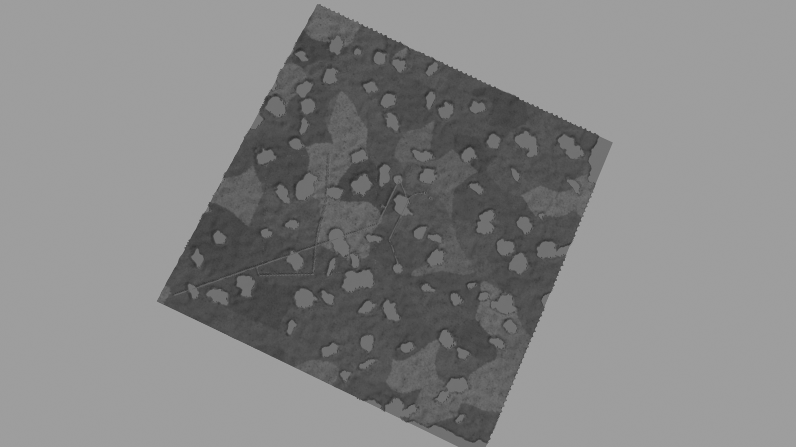
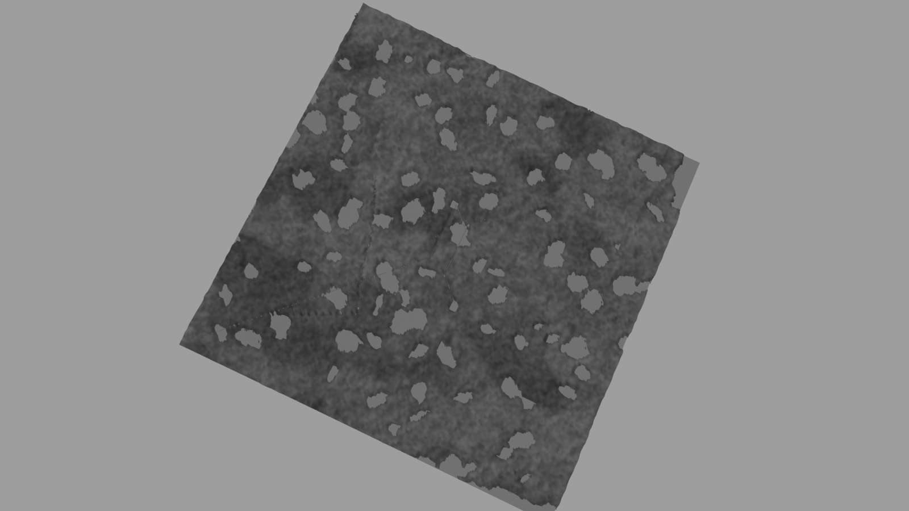
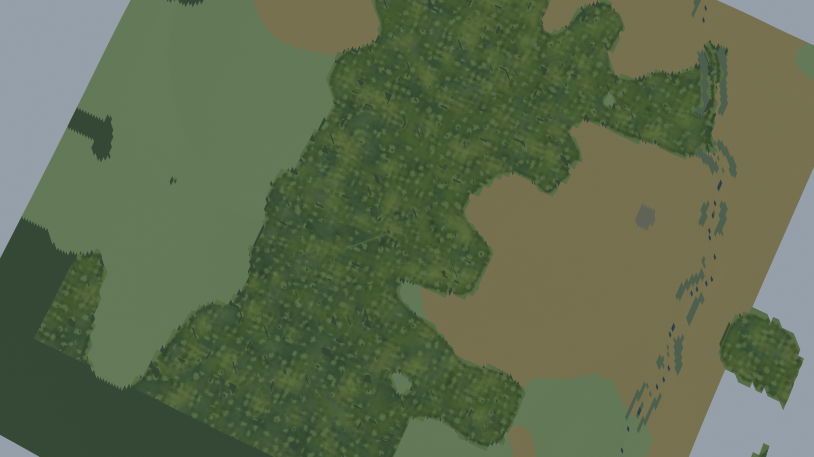
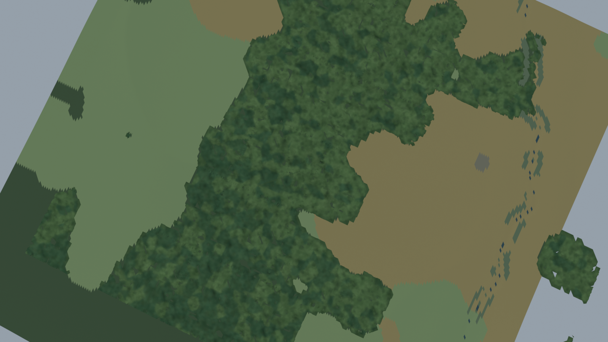
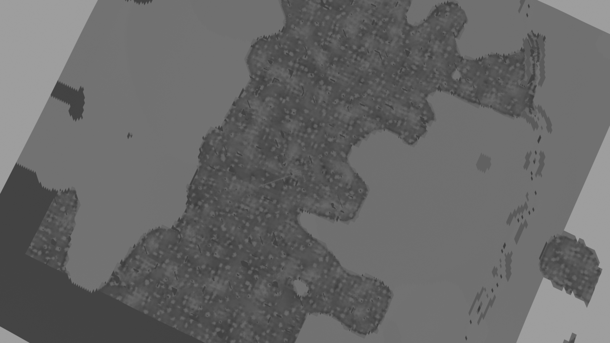
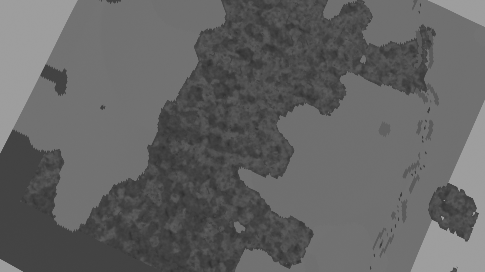